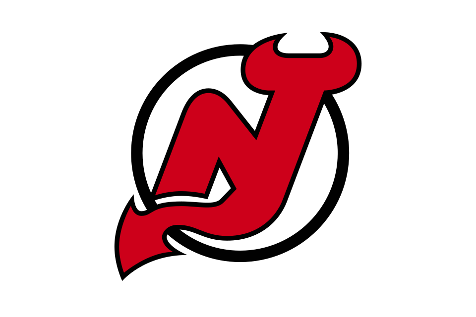

New Jersey Devils
Metropolitan · Eastern Conference · 11 headlines in the last 30 days
Latest Devils news
11 storiesNHL power rankings: Connor McDavid on fire; Devils land Connor Hellebuyck
Connor McDavid is off to a Wayne Gretzky-like start and Connor Hellebuyck finally is dealt. Here are the latest USA TODAY Sports power rankings.
DitD & Open Post - 10/26/26: Chess Move Edition
New Jersey Devils & Related Hockey Links for 10/26/26
Hellebuyck happy for deal with the Devils: Sitting at home 'was getting to me'
Saying that "sitting at home for so long was getting to me," new Devils goaltender Connor Hellebuyck expressed his eagerness to play for New Jersey.
Devils Notebook: Hellebuyck Trade Lessons, Larkin, Upcoming Road Trip & More
Every Sunday of the NHL season, Mike Fink empties the notebook with some thoughts, quick hits, and anything in between on the New Jersey Devils.
Who comes out ahead in the Hellebuyck trade? Grading the Devils vs. Jets
On Friday, the Devils acquired Hellebuyck from the Jets -- who received Mercer, Bjugstad, Command and Daws. Here's what it means for each team.


Stanley Cup odds: New Jersey Devils' odds shorten after blockbuster Hellebuyck trade
The New Jersey Devils are among the Eastern Conference favorites after trading for Connor Hellebuyck.

Connor Hellebuyck trade: Jets send star goalie to the Devils in exchange for four players, two draft picks
Hellebuyck finally gets his wish met to be moved out of Winnipeg after asking for a trade in the offseason